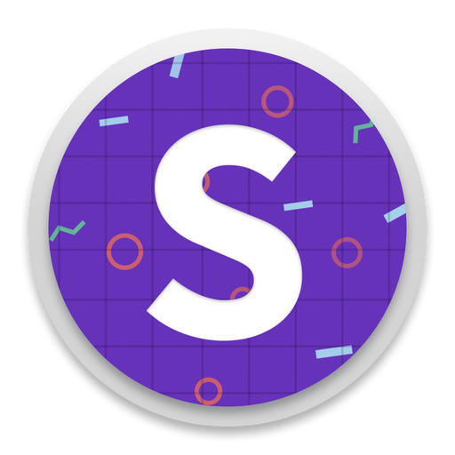

internet browsers
-
chrome: my primary browser for personal use and web development.
-
firefox: amazing developer tools.
-
Safari: for downloading other browsers 🤣
Recording & Streaming
-
camo: turns your iPhone into a webcam.
-
davinci resolve: free to use video editor.
-
OBS: open broadcaster software for video recording and live
streaming.
web development
-
Fetch: basic SFTP program with a free educational license.
-
git: version control system for all of your software development
needs.
-
github: for hosting personal and private projects in the cloud.
-

sizzy: For testing websites on a variety of devices.
-
 visual studio code: my favourite text editor as of 2017.
visual studio code: my favourite text editor as of 2017.
-
 warp: Terminal app made with the Rust programming language.
warp: Terminal app made with the Rust programming language.
-
ZSH: best shell for web development.
productivity
-
canary mail: email client with trackpad gestures and built-in
email encryption.
-
horo: time countdown for presentations.
-
iA Writer: note taking app with support for
Markdown, tags and folders.
-
numi: smart calculator that can be enhanced with extensions.
utilities
-
alfred: much better than spotlight.
-
 alt-tab: switch between windows, which should be the default
behaviour.
alt-tab: switch between windows, which should be the default
behaviour.
-
app cleaner: deletes apps and files hidden deep inside your Mac.
-
flux: changes the display colors during the day, so your eyes
don't bleed at night.
-
rectangle: move and resize your windows with keyboard shortcuts.
communication
-
discord: free to use chat server for gaming and open source
projects.
-
 slack: chat server popular with startups.
slack: chat server popular with startups.
-
zoom: for webinars and meetings at work.
miscellaneous
-
adobe reader: for digitally signing legal documentations.
-
gifski: convert videos into gifs.
-
hemingway editor: Highlights unnecessary & complicated
sentences in different colours.
-
kobo: Canadian e-book store
-
linkedin learning: highly recommended education platform.
-
malwarebytes: virus scanner for Mac and Windows.
-
pandan: shows you how long you've been staring at your monitor, so you can take a break.
-
spotify: streaming music for work or pleasure.
 affinity designer: replaces Adobe Illustrator.
affinity designer: replaces Adobe Illustrator.
 figma: browser based UI design tool with real-time
collaboration.
figma: browser based UI design tool with real-time
collaboration.